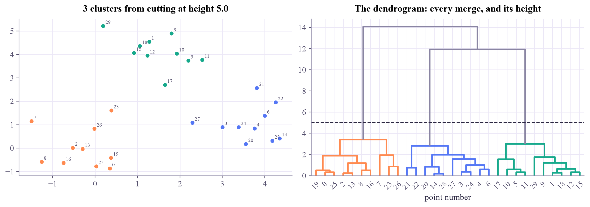
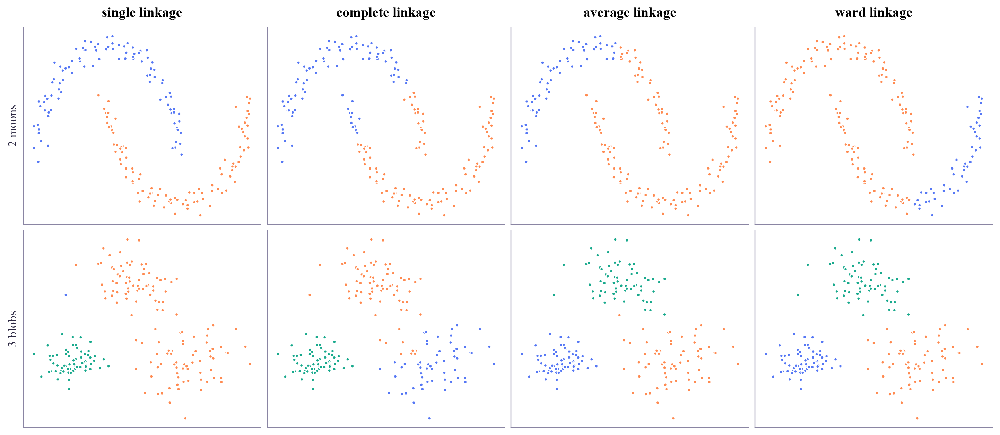
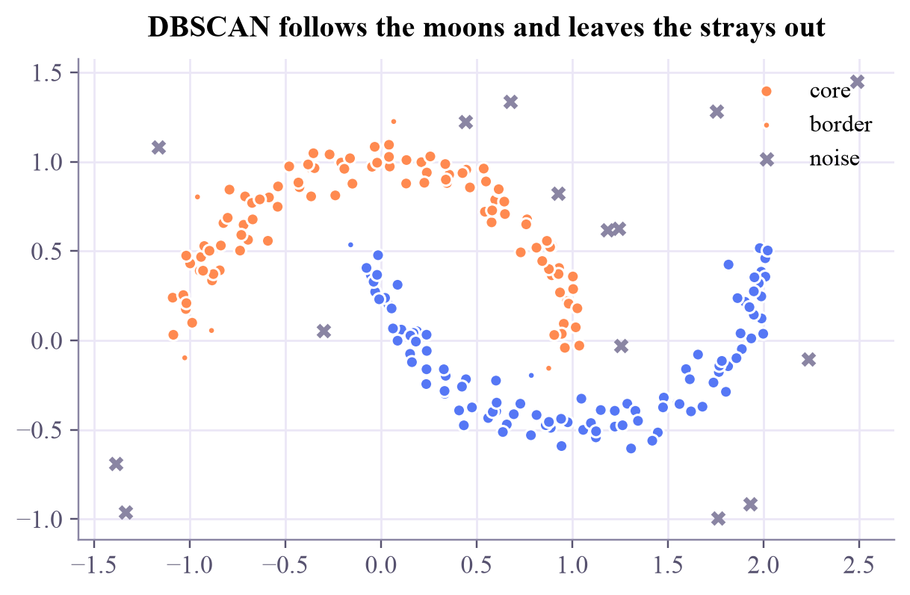
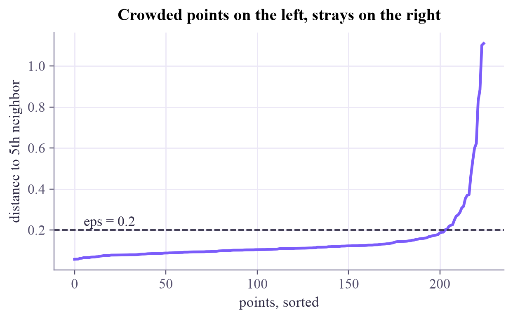
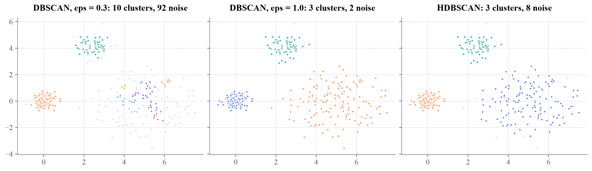

Machine Learning
 about 10 min
about 10 min ml-w8d3.ipynb
ml-w8d3.ipynb
Hierarchical clustering and DBSCAN
k-means needs the number of groups and expects round blobs. Two other methods need neither: one builds a family tree of the data, the other follows dense crowds and sets the stragglers aside.
In this lesson you will
- Build and cut a dendrogram, and choose between single, complete, average and Ward linkage
- Explain DBSCAN's core, border and noise points, and choose eps with a k-distance plot
- Know when HDBSCAN helps: crowds of different density
Warm-up
1 minFamilies and crowds

In week 6, k-means split points around centers, and you met two other methods in one sentence each. Biologists group species into a family tree without deciding in advance how many families there are. And from a plane, you'd spot the crowds in a park by where people stand close together, ignoring the lone joggers. Today those two ideas get their full lesson.
Big idea
4 minMerge from the bottom, or follow the density
Hierarchical (agglomerative) clustering starts with every point as its own cluster and repeats one step: merge the two closest clusters. After merges everything is one cluster. The record of all merges, drawn as a tree with each merge at the height of its distance, is the dendrogram. Cut it with a horizontal line and every branch below the line is a cluster: a low cut gives many small clusters, a high cut a few big ones. No is needed in advance; a big jump in merge height suggests a natural cut.
"Closest clusters" needs a rule, the linkage:
- single: the nearest pair of points. Follows chains and curves, but one stray bridge can join two groups.
- complete: the farthest pair. Compact clusters, sensitive to outliers.
- average: the mean over all pairs, a compromise.
- Ward: merge the pair that increases the total within-cluster spread the least. Like k-means, it prefers round, even groups.
DBSCAN (density-based spatial clustering of applications with noise) has two settings: a radius and a count, min_samples. A point with at least min_samples points within (itself included) is a core point. Core points within of each other belong to the same cluster, so a cluster grows through the crowd like a chain of handshakes. A non-core point within of a core point is a border point; everything else is noise. DBSCAN finds the number of clusters by itself, follows any shape, and labels outliers instead of forcing them into a cluster.
Its weakness: one for the whole dataset. A tight crowd and a loose one need different radii. HDBSCAN tries all radii at once and keeps the clusters that survive longest; you only say how small a cluster may be.
Hierarchical clustering records every merge in a tree you can cut anywhere; DBSCAN grows clusters through dense crowds and calls the rest noise.
Play
2 minCut the tree
Drag the dashed line in the dendrogram. Each colored branch below the line is one cluster on the left.
Try this
With 2 moons, compare single and ward at two clusters: which one follows the curves? Then switch to 3 blobs and try single: where does the long chain of merges happen? Look for the cut with the biggest gap above it.
Now DBSCAN. Big dots are core points, small ones border points, crosses noise.
Try this
Find an that gives exactly the two moons and leaves the strays as noise. Then switch to crowds of different density. A small tears the loose crowd apart; a big one lets the loose crowd swallow its tight neighbor. Find the best compromise: how many of the loose crowd's points are still called noise?
Code
2 minClustering in code
The notebook for this lessonEvery code cell below, with what it printed, is in
ml-w8d3.ipynb. To change the code and run it yourself, open the notebook in Google Colab (free, in your browser) or download it for your own Jupyter.import numpy as np
import matplotlib.pyplot as plt
from scipy.cluster.hierarchy import linkage, dendrogram, fcluster, set_link_color_palette
from sklearn.datasets import make_blobs
X, _ = make_blobs(n_samples=30, centers=[[0, 0], [4, 1], [1.5, 4]], cluster_std=0.7, random_state=2)
Z = linkage(X, method="ward") # each row of Z is one merge: (group a, group b, height, size)
cut = 5.0
labels = fcluster(Z, t=cut, criterion="distance") # cut the tree at height 5
palette = np.array(["#ff8a50", "#5577f5", "#17a98c", "#e45fa3", "#7b5cfa", "#f0ac2e", "#5aa9f2", "#bcb7cb"])
fig, (ax1, ax2) = plt.subplots(1, 2, figsize=(11, 3.8), layout="constrained")
set_link_color_palette(list(palette[:3]))
tree = dendrogram(Z, ax=ax2, color_threshold=cut, above_threshold_color="#8a85a3")
color_of = dict(zip(tree["leaves"], tree["leaves_color_list"])) # each point gets its branch's color
ax1.scatter(X[:, 0], X[:, 1], c=[color_of[i] for i in range(len(X))], s=40)
for i, (a, b) in enumerate(X):
ax1.annotate(str(i), (a, b), fontsize=7, xytext=(3, 3), textcoords="offset points", color="#57526f")
ax1.set_title(f"{labels.max()} clusters from cutting at height {cut}")
ax2.axhline(cut, color="#2c2842", ls="--", lw=1.2)
ax2.set_title("The dendrogram: every merge, and its height")
ax2.set_xlabel("point number")
plt.show()What it printed in the notebook
from sklearn.datasets import make_moons
from sklearn.cluster import AgglomerativeClustering
Xm, _ = make_moons(n_samples=200, noise=0.06, random_state=0)
Xb, _ = make_blobs(n_samples=200, centers=[[0, 0], [4, 0], [2, 3.5]], cluster_std=[0.5, 1.0, 0.7], random_state=5)
fig, axes = plt.subplots(2, 4, figsize=(13, 5.6), layout="constrained")
for col, method in enumerate(["single", "complete", "average", "ward"]):
for row, data in enumerate([Xm, Xb]):
k = 2 if row == 0 else 3
lab = AgglomerativeClustering(n_clusters=k, linkage=method).fit_predict(data)
axes[row, col].scatter(data[:, 0], data[:, 1], c=palette[lab], s=10)
axes[row, col].set_xticks([])
axes[row, col].set_yticks([])
axes[0, col].set_title(f"{method} linkage")
axes[0, 0].set_ylabel("2 moons")
axes[1, 0].set_ylabel("3 blobs")
plt.show()What it printed in the notebook

Single linkage is the only one that traces the moons, and the only one that fails on the blobs: it chains two blobs together and gives one stray point a cluster of its own. No linkage wins everywhere.
from sklearn.cluster import DBSCAN
rng = np.random.default_rng(0)
Xn = np.vstack([Xm, rng.uniform([-1.5, -1], [2.5, 1.5], size=(25, 2))]) # moons plus 25 stray points
db = DBSCAN(eps=0.2, min_samples=5).fit(Xn)
lab = db.labels_
core = np.zeros(len(Xn), bool)
core[db.core_sample_indices_] = True
print(f"clusters: {lab.max() + 1}, core points: {core.sum()}, border points: {(~core & (lab >= 0)).sum()}, noise: {(lab == -1).sum()}")
plt.figure(figsize=(6.4, 3.8))
plt.scatter(*Xn[core].T, c=palette[lab[core]], s=28, label="core")
plt.scatter(*Xn[~core & (lab >= 0)].T, c=palette[lab[~core & (lab >= 0)]], s=10, label="border")
plt.scatter(*Xn[lab == -1].T, c="#8a85a3", marker="x", s=24, label="noise")
plt.legend(loc="upper right")
plt.title("DBSCAN follows the moons and leaves the strays out")
plt.show()What it printed in the notebook
clusters: 2, core points: 203, border points: 7, noise: 15

from sklearn.neighbors import NearestNeighbors
dist, _ = NearestNeighbors(n_neighbors=5).fit(Xn).kneighbors(Xn) # includes the point itself, like min_samples
kdist = np.sort(dist[:, -1])
plt.figure(figsize=(6.4, 3.4))
plt.plot(kdist, color="#7b5cfa")
plt.axhline(0.2, color="#2c2842", ls="--", lw=1.2)
plt.text(5, 0.22, "eps = 0.2", color="#2c2842")
plt.xlabel("points, sorted")
plt.ylabel("distance to 5th neighbor")
plt.title("Crowded points on the left, strays on the right")
plt.show()What it printed in the notebook

from sklearn.cluster import HDBSCAN
Xd, _ = make_blobs(n_samples=[150, 150, 60], centers=[[0, 0], [5, 0], [2.5, 4]], cluster_std=[0.3, 1.2, 0.5], random_state=3)
fig, axes = plt.subplots(1, 3, figsize=(12, 3.4), sharey=True, layout="constrained")
for ax, (name, model) in zip(axes, [("DBSCAN, eps = 0.3", DBSCAN(eps=0.3, min_samples=5)),
("DBSCAN, eps = 1.0", DBSCAN(eps=1.0, min_samples=5)),
("HDBSCAN", HDBSCAN(min_cluster_size=15, copy=True))]):
lab = model.fit_predict(Xd)
ax.scatter(Xd[:, 0], Xd[:, 1], c=np.where(lab >= 0, palette[lab % 8], "#d9d5e6"), s=10)
ax.set_title(f"{name}: {lab.max() + 1} clusters, {(lab == -1).sum()} noise")
plt.show()What it printed in the notebook

Your turn
optionalYour turn: sweep eps
Run DBSCAN on the moons with strays for from 0.05 to 0.5, and print the number of clusters and noise points for each.
for eps in [0.05, 0.1, 0.15, 0.2, 0.3, 0.5]:
lab = None # TODO: DBSCAN(eps=eps, min_samples=5).fit_predict(Xn)
print(f"eps {eps:.2f}: clusters {None}, noise points {None}")Need a hint?
lab.max() + 1 counts the clusters (labels start at 0) and (lab == -1).sum() counts the noise points.
Show a solution
for eps in [0.05, 0.1, 0.15, 0.2, 0.3, 0.5]:
lab = DBSCAN(eps=eps, min_samples=5).fit_predict(Xn)
print(f"eps {eps:.2f}: clusters {lab.max() + 1}, noise points {(lab == -1).sum()}")
print("Only eps = 0.2 finds the two moons. Smaller: noise and fragments. Bigger: the moons and strays melt into one blob.")What it printed in the notebook
eps 0.05: clusters 0, noise points 225 eps 0.10: clusters 19, noise points 73 eps 0.15: clusters 3, noise points 20 eps 0.20: clusters 2, noise points 15 eps 0.30: clusters 1, noise points 10 eps 0.50: clusters 1, noise points 6 Only eps = 0.2 finds the two moons. Smaller: noise and fragments. Bigger: the moons and strays melt into one blob.
Check yourself
1 minQuick check
Question 1 of 3
You cut a dendrogram lower down. What happens?
Question 2 of 3
In DBSCAN, which points are labeled noise?
Question 3 of 3
Which method would you try first to find curved clusters with outliers in between?
Wrap-up
1 minToday in one sentence
Go deeper (optional)
ISLP section 12.4.2 (hierarchical clustering, with a good discussion of linkages and of where to cut). The originals: Ester, Kriegel, Sander and Xu, "A density-based algorithm for discovering clusters in large spatial databases with noise" (KDD, 1996), and Campello, Moulavi and Sander (2013) for HDBSCAN. The scikit-learn user guide has a picture comparing every clustering method on six toy datasets: search for "comparing different clustering algorithms on toy datasets".
Tomorrow: t-SNE, a way to draw a map of data with 64 dimensions on a flat page.

That's the lesson!
Tap the button to save it. Short and steady wins.
Next in Machine Learningt-SNE: maps of high-dimensional data
Marked by mistake? Undo